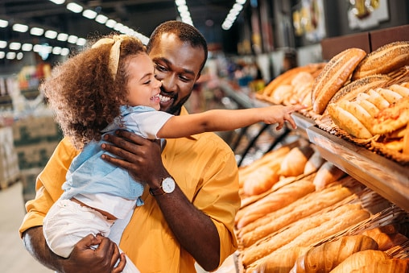

As the school year begins across Europe, bakeries are facing high demand, with pastries like croissants and pain au chocolat selling out quickly. Families are stocking up for early mornings and lunch snacks, causing many shops to run out by mid-morning. This highlights the ongoing popularity of baked goods in European households' back-to-school routines.
PASTRIES ARE SOLD OUT DURING THIS SCHOOL OPENING TIME IN EUROPE As schools across Europe reopen for the new academic year, bakeries and pastry shops are experiencing an unexpected surge in demand. Families are flocking to local patisseries to purchase delicious pastries to celebrate the return to school, leading to empty shelves and sold-out signs. From croissants to fruit tarts, the irresistible allure of freshly baked goods has parents and students alike eager to indulge in a tasty treat. Many bakeries report having to increase their production to meet the high demand, but even that hasn’t been enough to keep up with the enthusiastic crowds. This phenomenon not only highlights the popularity of pastries but also reflects the joyful spirit surrounding the school opening season. As communities come together to mark this occasion, the absence of these delightful treats serves as a reminder of the excitement and energy that accompanies the start of a new school year.
In a significant development, Jumia, the leading e-commerce platform in Africa, has announced the suspension of its operations in South Africa and Tunisia. This decision marks a strategic shift as the company reassesses its business model in the face of challenging market conditions. The move comes as Jumia aims to streamline its operations and focus on more profitable markets. Factors contributing to this decision include intense competition, regulatory hurdles, and economic challenges within these regions.
E-commerce retailer, Jumia Technologies, will double down on its operations and solidify its market in Kenya, Egypt, Morocco, and Nigeria to recover lost revenues incurred by its latest exit from South Africa and Tunisia. Jumia announced that the decision to leave South Africa and Tunisia was prompted by the company’s aggressive cost-cutting measures it has been implementing over the last year, in a bid to streamline operations and enhance efficiency. Jumia’s South African fashion platform, Zando, has been facing intense competition from more formidable foreign players stifling any potential for growth in an increasingly difficult economic climate. Both South Africa and Tunisia accounted for 3.5% and 2.7% of Jumia’s total orders respectively, recording low GMVs for the year ended December 2023. “After a thorough analysis, we made the difficult decision to close down our operations in South Africa and Tunisia. Both businesses account for negligible portions of our overall operations,” said Francis Dufay, Jumia CEO. The closures will hemmorhage 110 jobs in both countries, however, Dufay assured that some of the staff would be reallocated to other markets. The Group has regretted its optimization measures but cited them as necessary actions to restore pre-2019 profitability. “Decisions like these are never easy and we are extremely grateful to team members in both countries, who worked tirelessly to serve our customers every day. We are also grateful to our suppliers, vendors and logistics partners in those markets,” Dufay added. Since the entry of Amazon.co.za to South Africa in May this year, competition has soared in the market leading to the slow dissipation of local e-commerce players like Takealot, which recently sold its fashion shop. Tunisia’s fortunes were likely affected by the North African nation’s small market size. The NYSE-listed company also shed its entire operations in Tanzania and Cameroon in 2019. In December last year, it closed its food delivery service in seven countries opting to retain its core retail business due to losses. According to Statista, the e-commerce business in Africa hit US$40 billion last year and is expected to grow exponentially in the coming years. Jumia will need to brace up for more competition from not only giant retailers from the west and China, but also the ingenious and ambitious local market upstarts like Kilimall in Kenya and Kilimall in Kenya.
French cognac producers are facing significant setbacks as China enforces anti-dumping measures, targeting European imports. These measures, aimed at preventing the undercutting of domestic products, have led to higher tariffs and reduced demand for the popular French spirit in China, a major market. The restrictions are expected to impact French exports and disrupt the cognac industry’s growth in Asia.